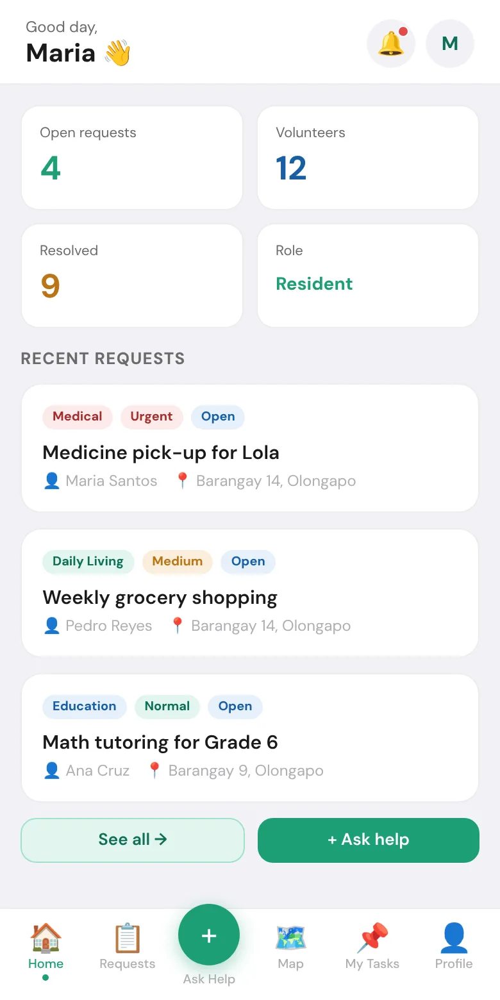
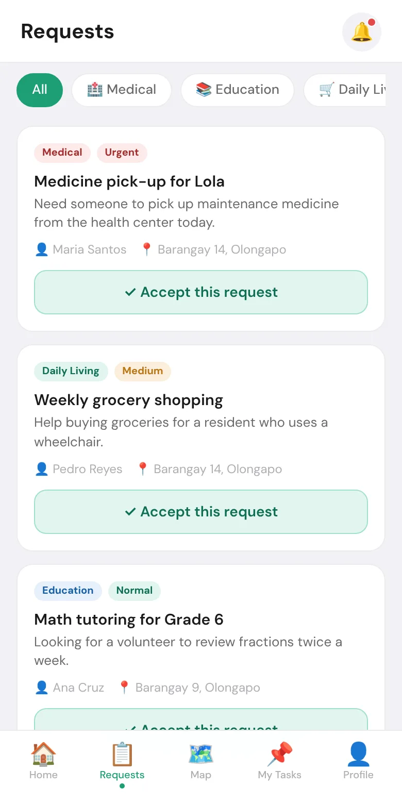
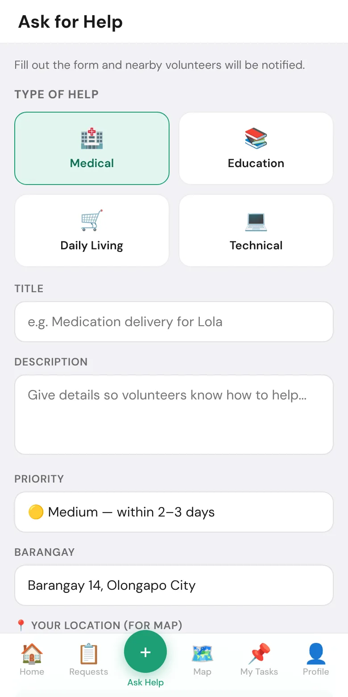
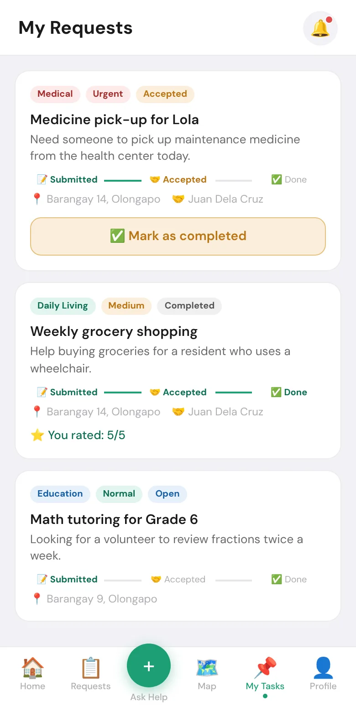
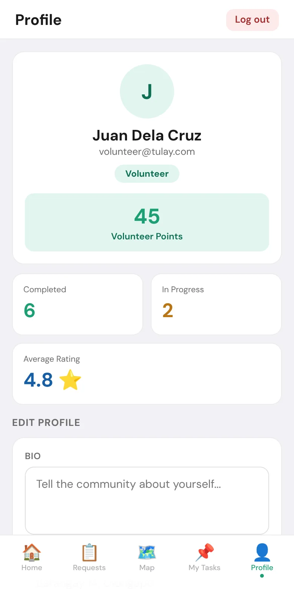

Tulay App
Full Stack Developer · Python, Flask, SQLite, Jinja templates, HTML, CSS, JavaScript
Overview
Tulay (Filipino for “bridge”) is a community help platform for barangays. Residents post requests for everyday help, and volunteers accept them, complete them and earn points and ratings along the way.
Problem
People in a barangay often need small but important help: picking up medicine for a grandmother, weekly groceries for a resident who uses a wheelchair, tutoring for kids, or help registering on a government website. Without a shared place to post and track these needs, matching them with willing neighbors depends on word of mouth.
Target users
- Residents who need help with daily tasks, such as seniors, people with disabilities and busy families.
- Volunteers who want to help their neighbors and can see where help is needed.
Process and design decisions
I designed the app around one clear request lifecycle:
- Submit. A resident posts a request with a title, description, category, priority, barangay and an optional map location.
- Accept. A volunteer accepts an open request. It is assigned to them and the resident is notified.
- Complete. The resident marks it done. The volunteer earns 10, 7 or 5 points for Urgent, Medium or Normal requests.
- Rate. The resident rates the volunteer from 1 to 5 with feedback, and the rating appears on the volunteer’s profile.
- Two roles with rules enforced on the server: only residents submit, only volunteers accept, and only the requester can complete or rate a request.
- Open requests are sorted Urgent first, with category and priority filters, so the most pressing needs are seen first.
- A map page plots open requests, using a JSON endpoint that returns only open requests with a location.
- In-app notifications with an unread counter keep both sides updated.
- A status check before every update stops two volunteers from accepting the same request, and database errors roll back safely.
- Three SQLite tables (users, requests, notifications), seeded with demo accounts and sample requests for testing.
How to use it
As a resident who needs help
- Register as a Resident with your barangay, then log in.
- Open Submit and fill in the title, description, category and priority. Add a map location if you want.
- Follow the request under My Requests. You get a notification when a volunteer accepts it.
- When the help is done, press Complete, then rate the volunteer.
As a volunteer
- Register as a Volunteer and log in.
- Browse Requests and filter by category or priority, or open the Map to see open requests near you.
- Press Accept on a request, then reach out to the resident.
- Track your work in My Requests. Points arrive when the resident completes the request, and your Profile shows your points, completed jobs and average rating.
My role and contributions
As the full stack developer, I built:
- The Flask backend: registration, login and logout, session handling and role-based access.
- The database design and the request lifecycle, including points, ratings and notifications.
- The dashboard, request list with filters, my requests, profile with statistics, and the map data endpoint.
Final result
A working web app where residents and volunteers connect through one workflow. Residents can post, track and rate help. Volunteers can find nearby requests, see them on a map, build points and earn a rating history.
Screenshots





Screens shown with demo data. Tap a screen to enlarge it.
Lessons learned
- Planning the request lifecycle first made the rules, points and notifications much easier to build correctly.
- Small checks, like confirming a request is still open before accepting it, prevent real bugs when several users act at once.
- Next, I would store passwords with a salted hash instead of plain SHA-256, and move the secret key out of the source code into an environment variable.
To add: the live site link and a note on which parts your teammates built if this was a group project.